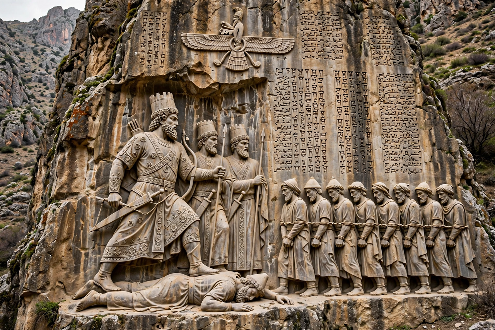

Behistun Inscription

The Behistun Inscription (also Bisotun, Bisitun or Behistan) is a multilingual inscription and large rock relief on a cliff at Mount Behistun in the Kermanshah Province of western Iran, established by Darius the Great (r. 522–486 BC). It includes three versions of the same text written in three different cuneiform scripts and languages: Old Persian, Elamite, and Babylonian (a variety of Akkadian).
Content
The text recounts Darius's accession after the death of Cambyses II: how the usurper Gaumata, posing as Cambyses' brother Bardiya, seized the throne, and how Darius with six companions killed him and then suppressed a series of revolts across the Achaemenid Empire. The relief shows Darius with his foot on the prostrate Gaumata, facing a line of nine bound rebel kings, beneath the winged symbol of Ahura Mazda.
Decipherment
The inscription is to cuneiform what the Rosetta Stone is to Egyptian hieroglyphs. Between 1835 and 1847 the British officer Henry Rawlinson, at considerable personal risk, copied the texts from the cliff face and used the Old Persian version — the simplest script — as the key to decipher first Old Persian and then, with others, the Elamite and Babylonian versions. This unlocked the vast cuneiform literature of ancient Mesopotamia and transformed the study of the ancient Near East.
The site
The monument stands about 100 metres above the ancient road between Babylon and Ecbatana. Darius apparently had the ledge below the inscription cut away to protect it. In 2006 the site was inscribed on the UNESCO World Heritage List.
See also: Darius the Great, Cuneiform, Persepolis.